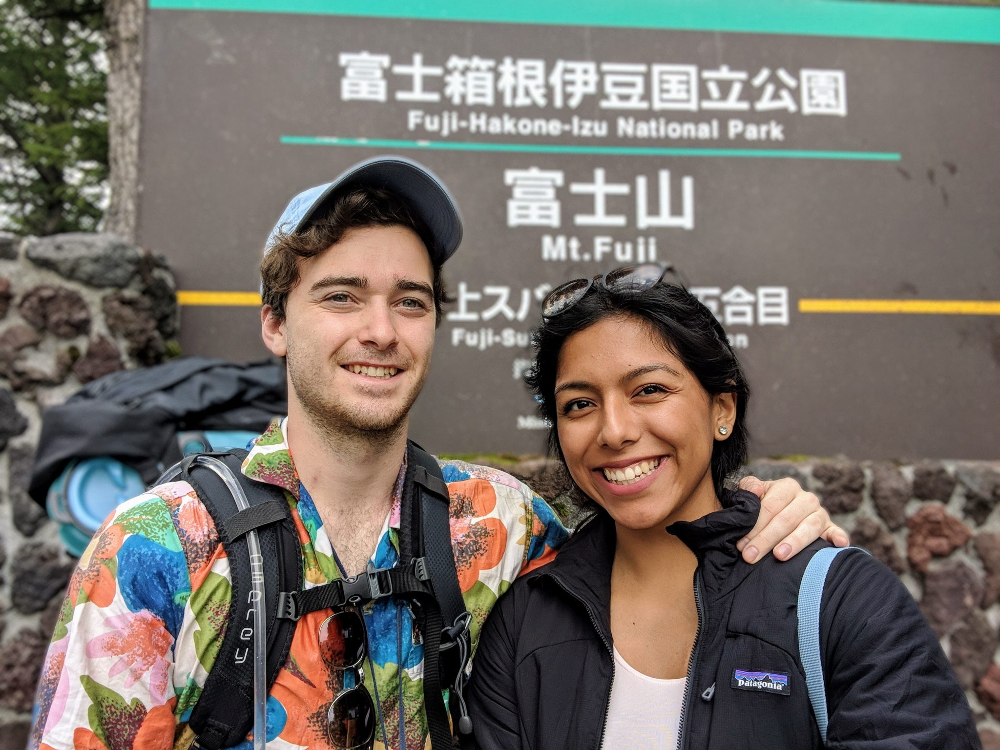
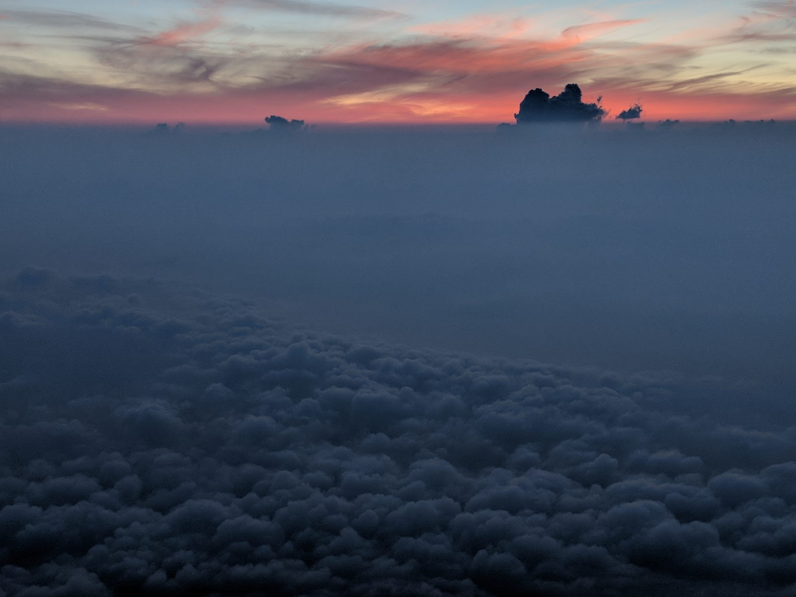
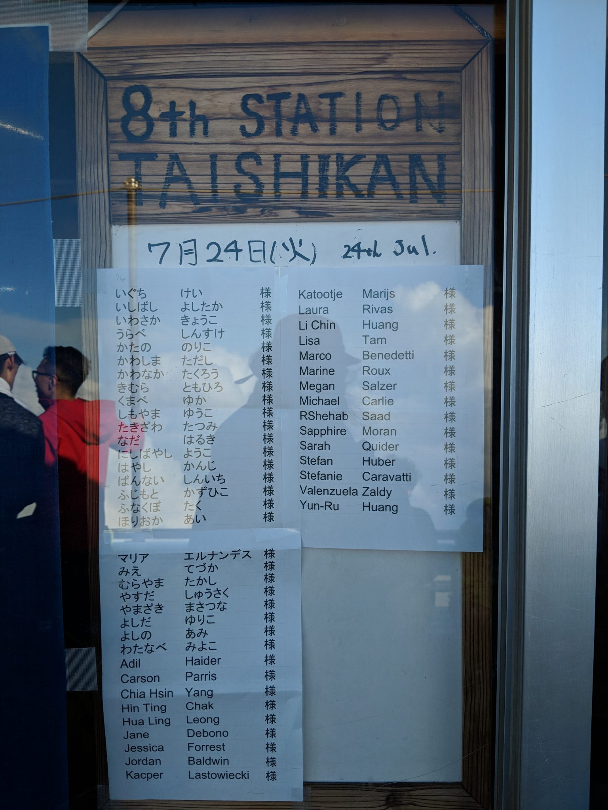
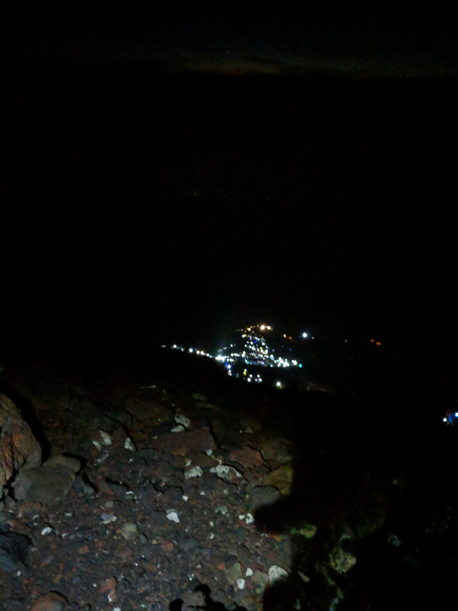
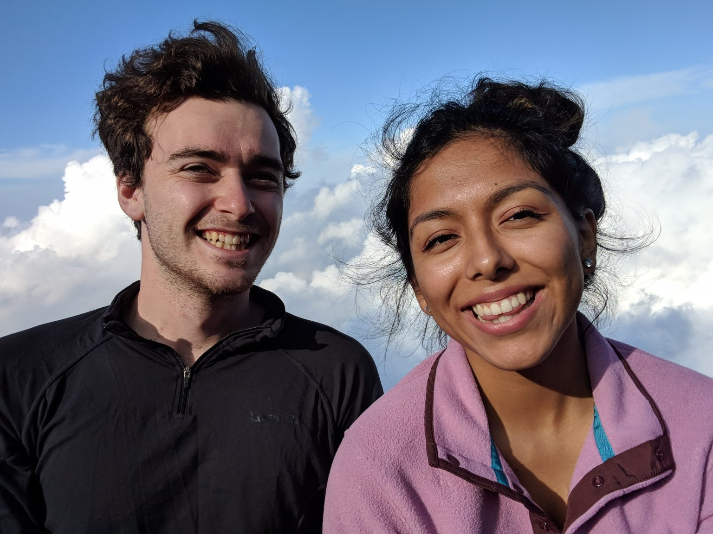

Yoshida Trail · JapanA personal travel journal
A little life.
A lot of elsewhere.
Notes from the long way around — the places, people, and small moments that stay with us.
Come wander
Stories by Gal Apolonia

A note from the road
For the stories
that happen along the way.
Gal Apolonia is a little corner for travel, everyday life, and the gear that gets us there. Unhurried stories, told as honestly as we remember them.
A few things we’ve learnedFrom the journal / 01
The long way up.
One mountain. One very early start.
A story we still talk about.
A trail report, in five moments
An all-night climb
into the clouds.
It had been a while since the hike, and I didn’t particularly enjoy it at the time. But I love looking back at the pictures. We took the Yoshida Trail, slept at the Taishikan Hut on the eighth station, and set off for the summit before sunrise.
The ascent
At the Fifth Station
We reached the Fifth Station from Shinjuku with just enough time to take it slowly. The trail began with long metal-covered switchbacks and a little rock scrambling. I was exhausted before noon.
The mountain hut
A very short night
At the Taishikan Hut, our “room” turned out to be a place in a giant sleeping hall. We tucked into our sleeping bags beside other tired hikers, knowing the alarm would go off again in a few hours.

The final push
One step, then another
The wind and light drizzle found every gap in our layers. With so many people on the trail, the final ascent moved in fits and starts. Guides with lights and safety vests kept us feeling safe.

The summit
We made it to the top
We reached the summit just before sunrise. The sun stayed hidden behind thick clouds, and the cold won. After a stop in a shelter for snacks and a little warmth, it was time to head down.

The descent took about five hours over loose volcanic gravel. We were tired, cold, and more than a little relieved to be back down. Would we do it again? Ask us after a warm shower.
What we carried
Field notes / A lesson in layers
Cold is a
great teacher.
For the climb, I wore an Airism tee, a Heattech base layer, a fleece, a Nano-Air jacket, and a Torrentshell. Even with all those layers, it was colder than I expected.
The Fjällräven Kånken I carried wasn’t comfortable under the weight. The best advice from that night? Prepare for real mountain weather, and take a pack that fits the load.
Back to the trail reportKeep the good stories.
Take the long way.